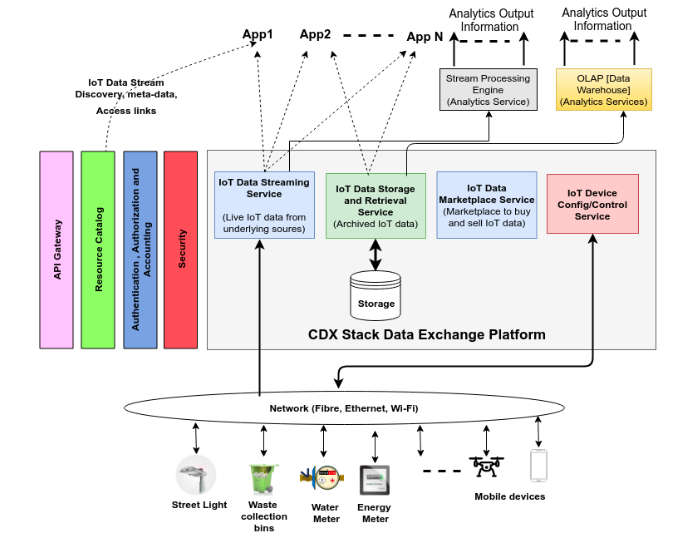
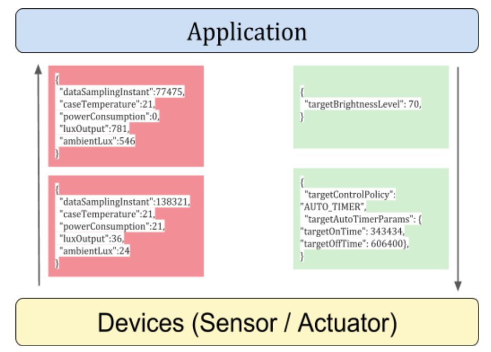
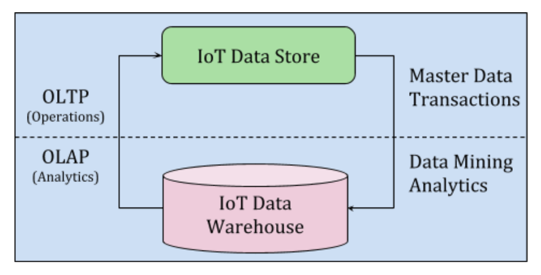

IoT Data Exchange¶
IoT devices are the key behind building a Smart City which enables efficient management of services offered by a City. These devices can range from being simple ones such as a temperature sensor to a more complex and sophisticated ones such as video cameras. Data produced by these devices will lead to building smart applications for managing the city efficiently. For example, Smart Waste Management, Smart Street Light Management, Smart Water Management, Smart Energy Management, Smart traffic Management etc.
A problem which we see currently is the siloed solution provided by application or solution vendors to build smartness into the city infrastructure. For example, a Smart Energy Monitoring and Control application will not be able to consume the data produced by a Smart traffic Management system or have the possibility to control the Street Lights using the Smart Street Light Management system in order to optimise the power usage. This makes us realize that building a common platform for bringing in the data from multiple silos a necessity for interoperability and efficient management of data.
To enable multiple such new applications in a multiplicity where different solution providers are in contention to provide smart solutions, it is critical for smart cities to adopt an API based, platform approach towards exchanging, consuming, metering and monetising data.
{kind=link}
Figure 1 : Service overview of IoT Data Exchange
Data Exchange¶
- To cater the requirements for an interoperable smartcity stack, we need sophisticated services in the Data Exchange as follows:
- IoT Data Streaming Service
- IoT Data Storage and Retrieval Service
- IoT Data Monetization Service
- IoT Device Configuration and Control Service
- Secure, authenticated, authorised and access controlled ways to access data exchange via APIs
IoT Data Streaming Service¶
IoT Data Streaming Service is an IoT Message Bus for exchange of real-time time-series IoT data. Services offered by an IoT Data Streaming Service are as follows:
- Dynamic Data Ingestion
- Secure, authenticated, authorised framework to enable ingestion of data
- Data Distribution
- Secure, authenticated, authorised framework to enable development of new services and applications which consumes the data produced by the various data sources
- Framework to support decoupling and asynchrony between the producers and consumers
- Data Metering
- Secure, authenticated, authorised framework to enable metering of data for both time-based and data-size based access
- Data Streaming APIs
- Secure, authenticated, authorised, access controlled API framework for interacting with the data streaming service
- Multi-Protocol support
- Support for diverse set of application protocols which can be used to implement the APIs and include: AMQP, STOMP, XMPP, WebSockets and HTTP
IoT Data Streaming APIs¶
IoT data exchange shall have endpoints to access services in a secure, authenticated, authorised, access controlled way.

- Publication
- Publication to CDX stack is done by Devices (sensors, virtual sensors) and Applications (device controllers, device managers etc.). The IoT data streaming service should provide necessary interface to devices (for sending sensed information) and applications (for sending control commands and configuration changes) through specific endpoints.
- Subscription
- Similar to publication, a subscription to CDX stack is done by Devices (for receiving control commands and configuration changes) and Applications (for receiving sensed information). The IoT data streaming service should provide necessary interface to devices and applications through specific endpoints.
{kind=link}
Figure 2 : Streetlight observation and control data
The above example is that of a streetlight publishing sensed data (red-block with up-arrow) and subscribing commands or configuration parameters (green-block with down-arrow) as per the schema provided during on-boarding. As a security policy, the system should make necessary validation and security checks to prevent devices from publishing data that doesn’t adhere to the schema defined during on-boarding.
- Some architectural requirements that needs to be looked into for implementation of data exchange platform are as follows:
- Reliable delivery - Support for providing a reliable message delivery using a protocols which are well tested, reliable, and optimized for high-data traffic
- Secure transactions - Support Authentication, Authorization and mechanisms to include Network Security
- Operational Maintenance - Support Monitoring, Auditing and Troubleshooting of the messaging system
- Uninterrupted Scaling - Support scalability through distributed and clustered modes of operation
- Real-Time IoT Message Bus - for enabling low latency actuation of mission critical applications
IoT Data Store Service¶
An IoT Data Store shall be considered as an Online transaction processing (OLTP) system which shall contain a repository (source data) from which thorough inferences can be made about the data as well as the functioning of the smart city. For example, these endpoints can be used for requesting the last known state of a streetlight or the values of the illuminance level over the past week, from a particular streetlight etc.
The IoT Data Store can leverage the existence of an Online analytical processing (OLAP) layer within the CDX stack. OLAP shall be considered as a layer on top of time-series IoT Data store to perform analytics. It can perform Extract Transform Load (ETL) operations with complex aggregate queries to provide multi-dimensioned data. This OLAP system could be an analytics application providing more insights over the time-series IoT Data store. This analyzed multidimensional data can then be pushed back into the stack.
{kind=link}
Figure 3 : CDX view of a Data Store and Warehouse
- Services offered by an IoT Data Store Service are as follows:
- Data Querying
- Secure, authenticated, authorised framework to support multi-dimensional queries
- Data Analytics
- Secure, authenticated, authorised framework to submit analytic queries
- Multi-Data Indexing
- Support for providing multi-dimensioned or multi index data for ease of querying
- Data Store APIs
- Well defined APIs to interact with the datastore for ease of operation
{kind=link}
Figure 4 : Multidimensional indexed view of a Data Store
Some architectural requirements that needs to be looked into for implementation of Data Store is given below:
- Swift write performance: There will be numerous sensors sending multiple data points per second. Hence the write performance of the database should be swift.
- Flexible query performance: The specifications of data required for analytics by a data warehouse range from being narrow to wide. This requirement should be handled by the database. Querying should be flexible as well fast.
- Ease of scale-out: There should be an option to linearly scale out when required. Hence, without too much intervention or configuration by developers, the database should support linear scalability and high availability.
IoT Data Marketplace Service¶
- IoT Data Marketplace Service will enable data monetization where users can provide Data as a service (DaaS). Marketplace will be a key enabler for building a rich ecosystem around the data exchange platform. This will provide opportunity to enable:
- Data economy
- Interoperability
- Improve Data Quality
- Crowdsourcing
{kind=link}
Figure 5 : Data Marketplace workflow
- Services offered by an IoT Data Marketplace Service are as follows:
- Data Discovery
- Secure, authenticated, authorised discovery framework for searching and discovering available data sources. This shall be enabled by the Catalog service
- Data Following
- Secure, authenticated, authorised data following framework for requesting access for interested data sources
- Data Payment
- Secure, authenticated, authorised payment framework for accessing interested data sources
- Data Sharing
- Secure, authenticated, authorised data sharing framework for allowing interested users to obtain data
IoT Data Marketplace APIs¶
- IoT data marketplace shall have endpoints to access services in a secure, authenticated, authorised, access controlled way. The marketplace should be envisioned to be build over the definitions around INDIA Stack
- Follow
- Follow endpoint in IoT data marketplace should provide necessary interface for showing interest to data sources through specific endpoints.
- Payment
- Payment endpoint in IoT data marketplace should provide necessary interface for initiating digital payment between consumers and producers of data through specific endpoints. The interface shall be based on Unified Payment Interface (UPI)
- Share
- Share endpoint in IoT data marketplace should provide necessary interface for allowing provider of data to approve interested parties to access data sources through specific endpoints.